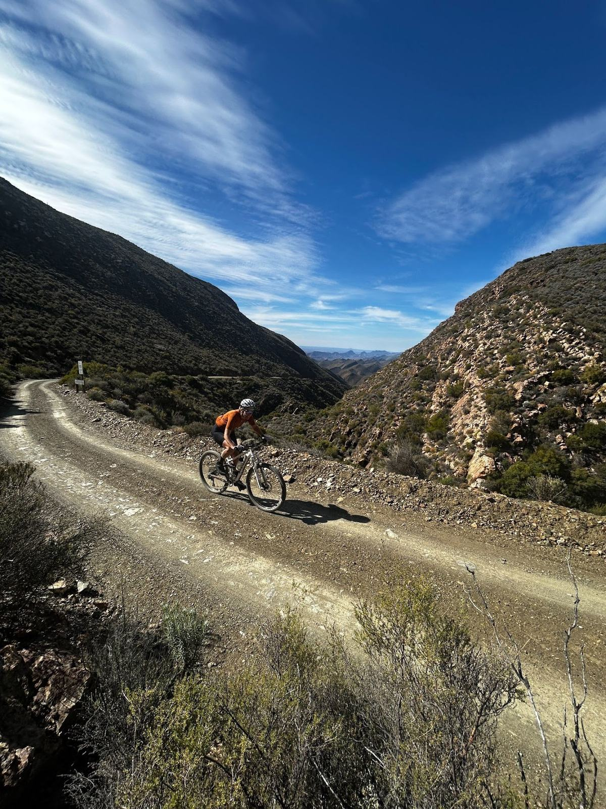
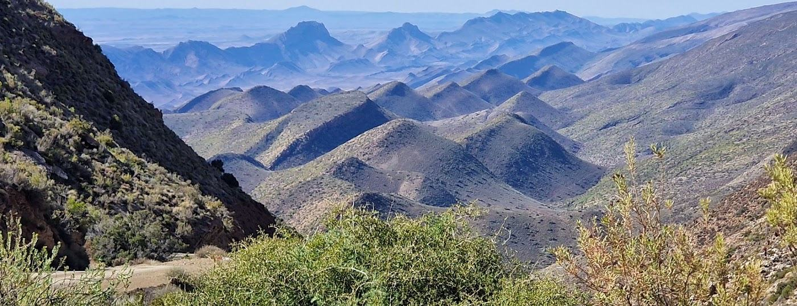
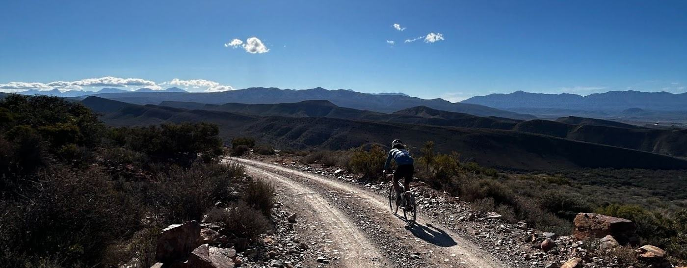

Day 1 | Bosluyskloof & Seweweekspoort
Shuttle to Bosluyskloof Pass and ride through Seweweekspoort and Hoeko Valley to Ladismith.
A high-impact Klein Karoo cycling experience.



A condensed journey featuring two of the Klein Karoo’s best-known rides, from the dramatic Seweweekspoort gorge to the sweeping bends of Rooiberg Pass.
Shuttle to Bosluyskloof Pass and ride through Seweweekspoort and Hoeko Valley to Ladismith.
Climb Rooiberg Pass, descend toward Calitzdorp and finish with local wine tasting.
A relaxed architectural tour of Ladismith.
50% deposit to confirm; balance 30 days before start. Availability must be confirmed. Arrive Thursday for a Friday riding start.
Ride distances may be tailored to your needs, subject to route conditions and group logistics.
Contact the team for availability, pricing and tour arrangements.